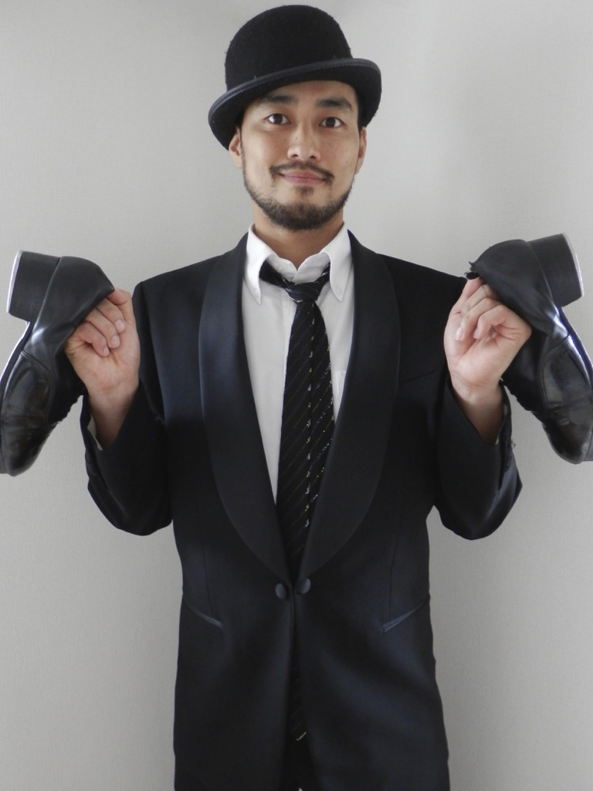
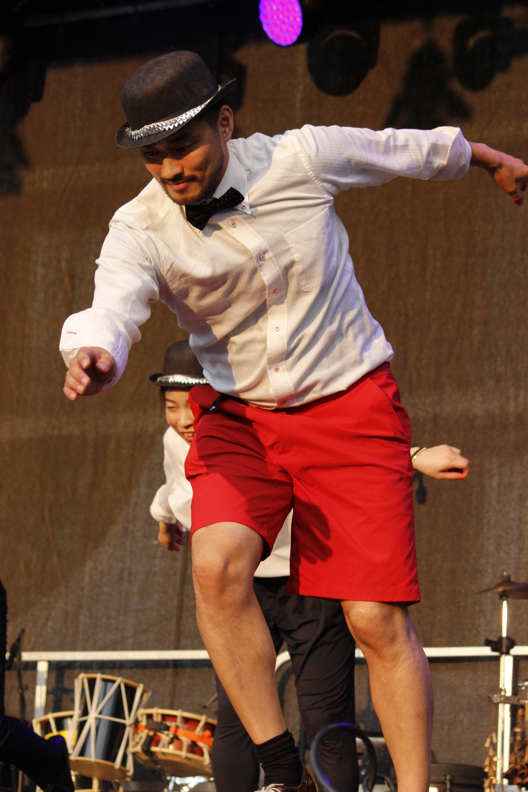

タップダンスレッスン・ワークショップ
学校・企業・イベントなどでの体験レッスンやワークショップの企画・指導。
メールで相談 →TAP DANCER · CHOREOGRAPHER · INSTRUCTOR
踊る、教える、つくる。
映画・CM・MV・舞台で出演や振付を手がけるタップダンサー。東京・池袋を拠点に、Rhythm Speaker代表、日本タップダンス協会理事として実演・指導・制作に取り組んでいます。
レッスン・スタジオ利用は Rhythm Speaker へ
STATEMENT
タップダンスを、
踊る技術から、
学び・表現・つながりの文化へ。
START HERE
出演・振付のご相談、レッスン・スタジオ利用、その他の活動はこちらから。
SELECTED WORKS

SIGNATURE PERFORMANCE
古庄里好のオリジナル・タップダンス作品。代表作『木箱』で、自身のダンス表現をご覧ください。
『木箱』をYouTubeで見る → ほかのダンス映像を見る → 写真：過去の舞台公演よりWORK WITH FURUSHO
舞台・映像作品への出演・振付から、ワークショップ、講師の紹介、スタジオ運営、音楽制作までご相談いただけます。

学校・企業・イベントなどでの体験レッスンやワークショップの企画・指導。
メールで相談 →イベントや教室に適した講師の紹介・調整、指導プログラムのご相談。
メールで相談 →レッスン設計や集客、予約導線など、教室・スタジオ運営の改善に関するご相談。
メールで相談 →舞台・映像・レッスンなどに使う楽曲や音源の制作に関するご相談。
メールで相談 →STUDIO SERVICE
通常レッスンの予約・スタジオレンタルはRhythm Speaker公式サイトへ。PROJECTS
タップダンスを軸に、教室運営、映像発信、教材制作などの活動を展開しています。
CONTACT
公演・イベント・映像作品での出演・振付、外部レッスンや制作に関するご相談を受け付けています。企業・団体の方はメールで、個人の方はLINEからもご連絡いただけます。